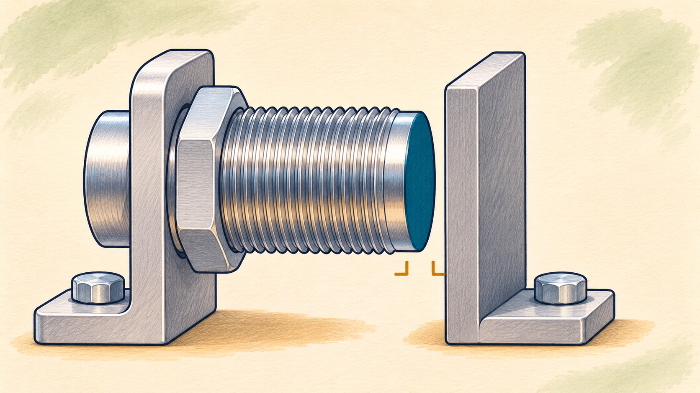
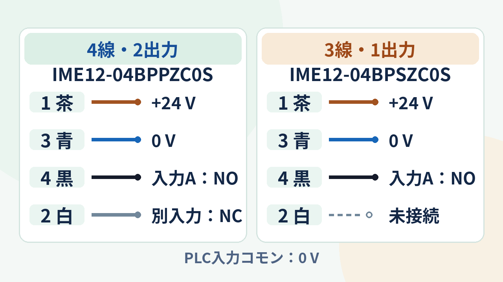
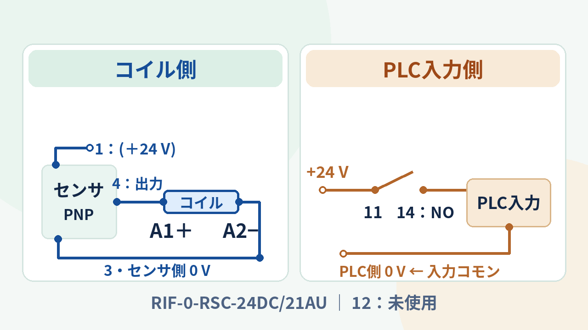
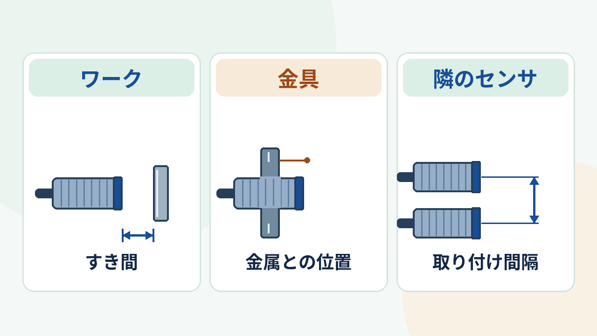

向いている人
- 近接センサの基本を現場目線で知りたい人
- PLC入力との関係をやさしく整理したい人
- リミットスイッチとの違いを知りたい人
近接センサは、ワークの有無や部品の位置を触れずに検出する入力機器です。この記事では、工場設備で金属ワークや金属製の検出片を検出する誘導形を中心に扱います。
誘導形では、検出面の近くに金属が来たときの電磁的な変化を検出します。押し込みも、光を当てることも必要ありません。近接センサには、樹脂や液体などを対象にできる静電容量形、磁石を検出する磁気式などもあります。
一般的な誘導形では、鉄と比べてアルミなどで検出距離が短くなる場合があります。ワークが小さい、形や厚みが違うときも、形式別の特性図と現物で確認します。材質専用形などもあるため、金属の種類から一律の換算はできません。
樹脂の箱など、非金属の物体そのものを検出したいときは、光電センサも候補です。光電センサは遮光や反射による受光量の変化を見ます。色・表面・透明度や光路の影響は、選ぶ方式と機種で確認します。

例：オムロン E2E-X2D1-M1 の検出距離は 2 mm ±10%、設定距離は 0～1.6 mm です。標準検出物体は鉄の 8×8×1 mm。これはこの形式の仕様で、アルミや小さな実ワークにそのまま使える値ではありません。
取付けでは衝突しないすき間を確保し、ワークのばらつきや振動を含めて、実際の最も離れる位置でも安定して検出できるか確認します。設定距離の表にある「0」は接触させる指示ではありません。
近接センサが物体を検出すると、出力は形式の動作モード（NO／NC）に従って切り替わります。検出＝必ず出力ONではありません。表示灯も、動作や設定範囲など何を示すかを取扱説明書で確認します。
対象物あり／なしを、安全に確認できる同じ条件で比べます。センサ出力は切り替わるのにPLC入力が変わらないときは、端子や配線、入力ユニットの仕様を確認します。出力自体が切り替わらないときは、電源と検出条件から切り分けます。
交換時は 2線式／3線式、電源、NO／NC、該当する場合はNPN／PNPと入力方式まで照合します。外形やコネクタが同じでも、ピン配列や出力方式が同じとは限りません。

後輩M12ってピンの数ですか？ 茶・青・黒だけでつなげますか？

先輩M12はコネクタのねじの呼び径、12 mm。4ピンは端子の数だよ。黒だけを信号に使えるのは、4番の黒が必要な出力で、白を使っていないことを型式の配線図とPLC側で確認できたとき。
下図は、SICKの2形式をDC24 V・PNP対応のPLC入力につなぐ例です。前のオムロン2線式の距離例とは別の回路です。

| ピン・線色 | 4線・NO＋NC | 3線・NO |
|---|---|---|
| 1・茶 | +24 V | +24 V |
| 3・青 | 0 V | 0 V |
| 4・黒 | NO出力 → PLC入力 | NO出力 → PLC入力 |
| 2・白 | NC出力 → 使う場合は別のPLC入力 | 未接続 |
図のPLC入力コモンはセンサ電源と同じ0 V側です。例えば三菱電機MELSEC iQ-Fの該当機種では、PNP出力を受けるときはS/Sを0 Vへ。端子名・接続先は入力ユニットの資料で確認します。
2番（白）がPLC・子局の入力や診断に使われているなら、省けません。未使用の芯線は他の線や電源に接続しません。
白だけが出力の3線式もあります。 オムロン E2E-X4B212-M1（PNP・NC）は2番（白）が出力、4番（黒）は未接続。黒だけを信号線として通すケーブルでは、この出力は届きません。
機種によっては2番が設定・診断用だったり、未接続だったりします。交換時は両方の配線図でピン番号・PNP／NPN・NO／NC・電圧と負荷を照合し、取付条件も確認します。ワークあり・なしの両方で入力を確認してください。
子局（リモートI/O）は、機械の近くで入力信号を集めます。PLCからはどちらも入力として読めますが、接続先と確認する場所が違います。
センサ → 端子台／入力端子 → PLC
電源、信号線の行き先、入力コモンと入力番号を確認します。
センサ → 子局のM12入力 → 通信 → PLC
ポートのピン割付、入力方式と電源、PLCで読む入力アドレスを確認します。
例えばSiemens ET 200eco PNの 6ES7141-6BF00-0AB0 は、ポートX1で4番ピンがDI0、2番ピンがDI4です。同シリーズの 6ES7141-6BG00-0AB0 は2番ピンを使いません。同じM12でも、電源・入力方式、各ピンの役割、PLCの割付をポートごとに照合します。上のSICKとの組み合わせを推奨または保証する例ではありません。
直接入力に接続できるなら、リレーは必須ではありません。無電圧接点でPLC入力へ渡す構成では、センサ出力はリレーのコイルへ、PLC入力はリレーの接点へつなぎます。固定入力の子局ポートからコイルを駆動する例ではありません。

リレー入力の消費電流は定格24 Vで代表値9 mAです。定常・投入時の電流がセンサ出力の定格内で、電源の変動や出力・配線の電圧降下を見込んでも、コイル端子間の電圧が使用温度での仕様範囲に入ることを確認します。
接点側では、PLC入力電流と接点の最小負荷を照合します。動作・復帰にも時間がかかるため、短い検出パルスではリレーが追従できるか確認が必要です。
まず型式と検出対象を確認し、機械側にずれや干渉がないか見たうえで信号を追います。表示灯だけで故障や配線不良とは判断しません。

同じ外径で交換しても、検出面の出方や使える設定距離は変わることがあります。古い位置や突き出し量をそのまま正解とせず、交換先の形式資料と照らし合わせてください。
後輩同じ外径なのに、交換したら反応が変わりました。
先輩まず、ワークと検出面のすき間を見よう。取付け金具が変わっていないかも確認してね。
近接センサとよく比較されるのがリミットスイッチです。どちらも位置確認や到達確認で使われますが、検知の考え方が違います。
| 項目 | 近接センサ | リミットスイッチ |
|---|---|---|
| 検知方法 | 非接触で検知 | 接触して検知 |
| 見るポイント | 距離、対象物、LED、配線 | 当たり方、押し込み、接点、戻り |
| よくある用途 | 金属ワークや検出片の有無・位置確認 | 機械の端位置・原位置の確認 |
| 特徴 | 摩耗しにくい | 構造が分かりやすい |
近接センサは「距離と対象物」を見る機器で、リミットスイッチは「当たり方と接点」を見る機器です。名前が違うだけでなく、現場での確認ポイントも変わります。
手や工具を可動部へ入れる前に、設備の安全手順に従って停止し、電気・空圧など必要なエネルギーを隔離して、不意の動きや再起動を防ぎます。通電での信号観測が必要な場合は、現場で許可された手順と安全な位置から行います。
一般の近接センサは、人を守るための検出や安全停止の代用にはしません。
誘導形で金属を検出するときは、実ワークの材質・寸法、設定距離、取付け条件をセットで見ます。信号の不具合は、センサの表示灯と出力、PLC入力を分けて確認します。
最終内容更新：
公式資料確認日：
実際に使う機器の取扱説明書・形式別仕様を優先してください。